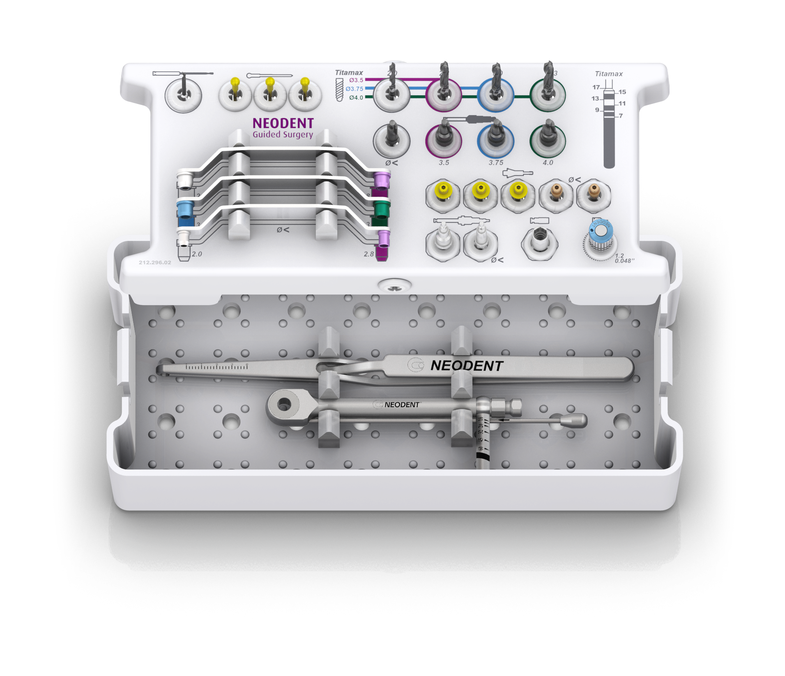
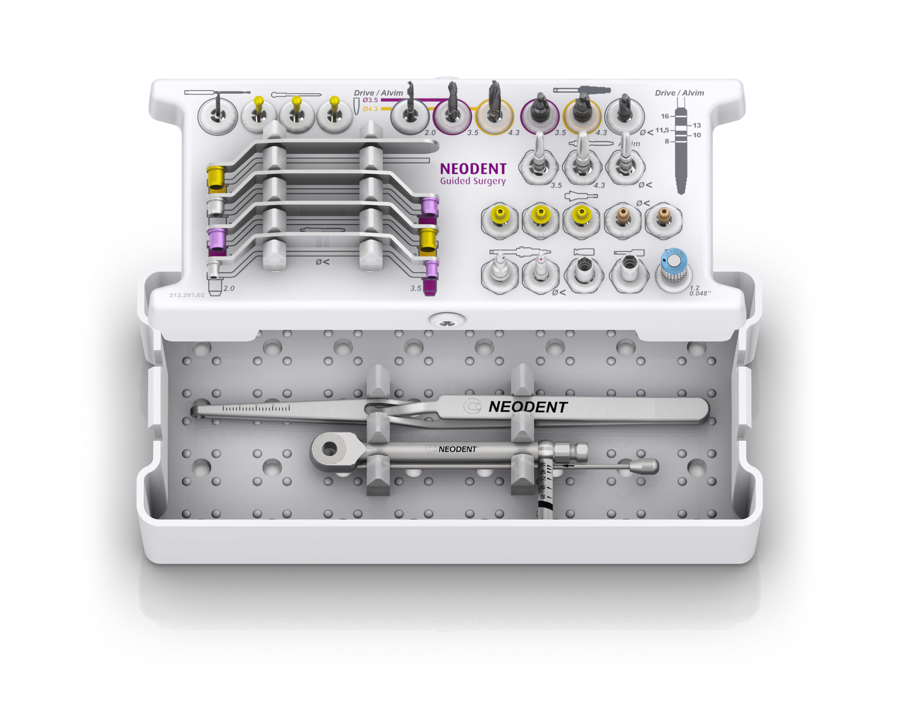
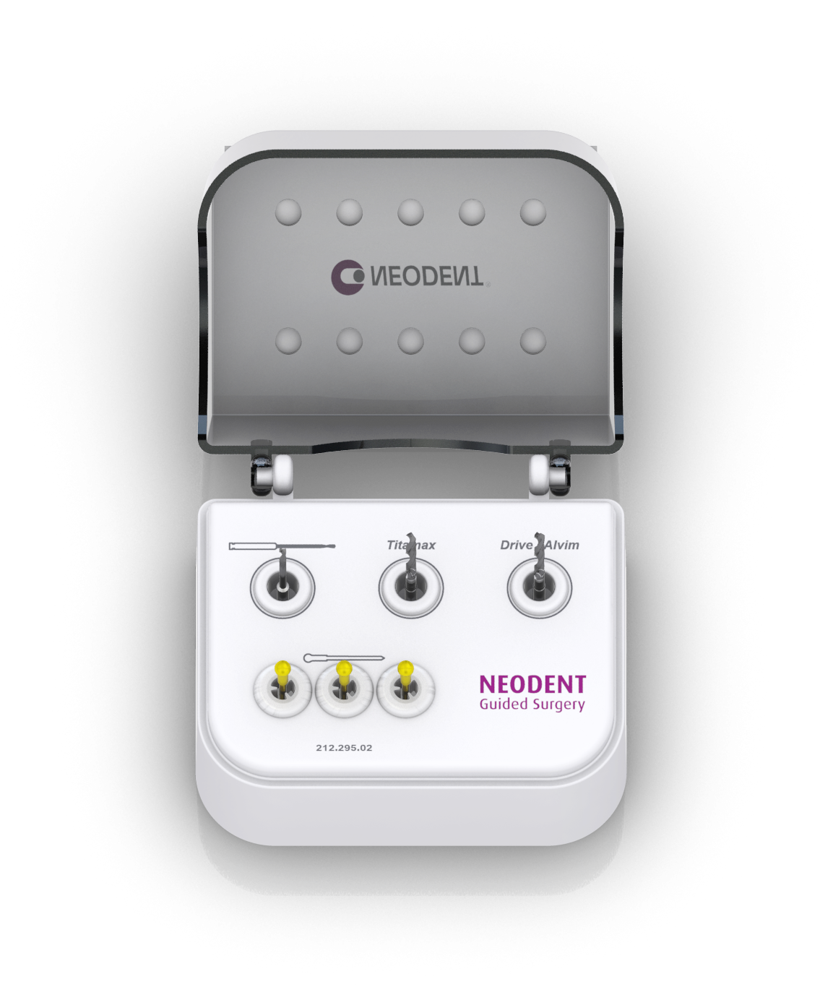

Kits cirúrgicos para a instalação dos principais implantes cone Morse

Kit NGS Titamax®:
para implantes Titamax® CM e Titamax® CM EX

Kit NGS Implantes Cônicos:
para implantes Drive® CM e Alvim® CM, com macho de rosca para instalação do Alvim® CM em osso tipo I e II

Kit NGS Start:
para osteotomia inicial guiada da broca 2.0. Logo após, a cirurgia é realizada pela técnica convencional com retalho